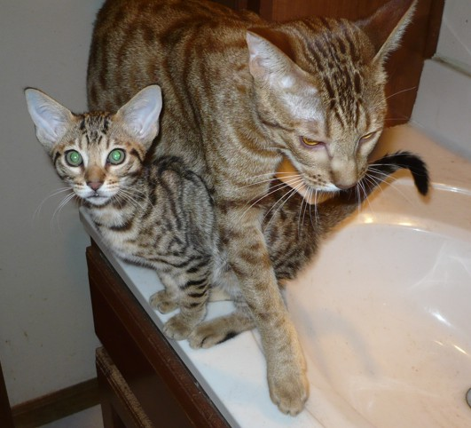
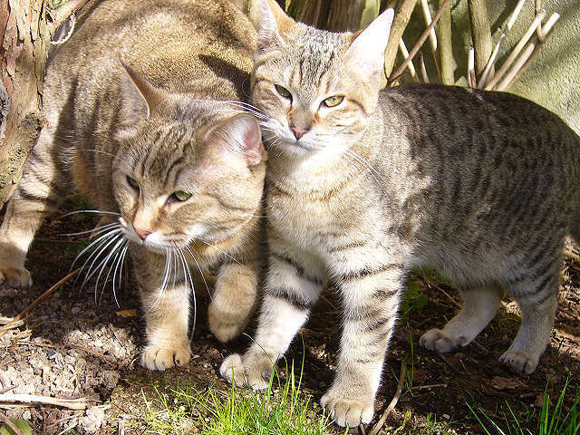

1.Asian Semi-longhair

The Asian Semi-Longhair is a cat breed similar to the Asian Shorthair except it has semi-long fur. The breed is also known by the name Tiffanie or Tiffany. It is recognized in any of the Asian Shorthair or Burmese colors and patterns. Like the Asian Shorthair, the breed was developed in Britain and is not currently recognized by any U.S. Registries. It has full recognition in the GCCF.It is related to, and in some registries distinct from, the Chantilly-Tiffany or Foreign Longhair, the North American variant.
The Tiffanie was developed in the 1980s in the United Kingdom as a longhaired version of the Asian Shorthair.The breed origins can be traced back to matings between a longhaired cat and a Burmese. They are very similar to Burmillas.
The Tiffany is a gentle, active and curious breed. Cats of this breed are attached to their owners, but do not always get along with other cats, since they can be quite jealous. The Asian Semi-longhair is spirited and expects its keeper to dedicate a lot of time to it. Asian Semi-longhairs can be very vocal and are not recommended for small apartments.
2.Norwegian Forest cat

The Norwegian Forest cat (Norwegian: Norsk skogkatt or Norsk skaukatt) is a breed of domestic cat originating in Northern Europe. This natural breed is adapted to a very cold climate, with a top coat of glossy, long, water-shedding hairs and a woolly undercoat for insulation. Although this is uncertain, the breed's ancestors may have been a landrace of short-haired cats brought to Norway by the Vikings around 1000 AD, who may also have brought with them long-haired cats, like those ancestral to the modern Siberian and Turkish Angora breeds. During World War II, the breed became nearly extinct until efforts by the Norwegian Forest Cat Club helped the breed by creating an official breeding program. It was registered as a breed with the European Fédération Internationale Féline in the 1970s, when a local cat fancier, Carl-Fredrik Nordane, took notice of the breed and made efforts to register it. Currently, the Norwegian Forest breed is very popular in Norway, Sweden, Iceland and France.
It is a big, strong cat, similar to the Maine Coon breed, with long legs, a bushy tail and a sturdy body. The breed is very good at climbing, since they have strong claws. The lifespan is usually 14 to 16 years, though kidney and heart diseases have been reported in the breed. Specifically in this breed, complex rearrangements of glycogen branching enzyme (GBE1) can cause a perinatal hypoglycaemic collapse and a late-juvenile-onset neuromuscular degeneration in glycogen storage disease type IV.
3.Ocicat

The Ocicat is an all-domestic breed of cat which resembles a wild cat but has no wild DNA in its gene pool. The breed is unusual in that it is spotted like a wild cat but has the temperament of a domestic animal. It is named for its resemblance to the Ocelot. The breed was established from Siamese and Abyssinian stock; later, American Shorthairs (silver tabbies) were added to the mix and gave the breed their silver color, bone structure and distinct markings.
The first breeder of Ocicats was Virginia Daly, of Berkley, Michigan, who attempted to breed an Abyssinian-pointed Siamese in 1964. The first generation of kittens appeared Abyssinian, but the result in the second generation was not only the Abyssinian-pointed Siamese but also a spotted kitten, Tonga, nicknamed an "ocicat" by the breeder's daughter. Tonga was neutered and sold as a pet, but further breedings of his parents produced more spotted kittens, and became the basis of a separate Ocicat breeding program.Other breeders joined in and used the same recipe, Siamese to Abyssinian, and offspring to Siamese. In addition, due to an error by CFA in recording the cross that produced the Ocicat, the American Shorthair was introduced to the Ocicat giving the breed larger boning and adding silver to the 6 colors. The Ocicat was initially accepted for registration in The Cat Fanciers' Association, Inc., and was moved into Championship for showing in 1987. Other registries followed. Today the Ocicat is found all around the world, popular for its all-domestic temperament but wild appearance. The Ocicat was named by Virginia's daughter, Virginia E. Daly.
4.Traditional Persian

Traditional Persian is one of several names for a group of cats that are considered to be essentially the original breed of Persian cat, before the variety was selectively bred to have extreme features. Other everyday usage names are: Doll Face Persian, Classic Persian, Old Fashioned Persian, Long-nosed Persian, Old-style Longhair, Traditional Longhair and Original Longhair.
The physical appearance of this domestic cat breed barely changed when compared to photos dating back to the late 1800s. However, since some breeders in the United States and other parts of the world introduced the brachycephalic mutation into the breed, the short nose and clear break became shorter and higher. This resulted in the modification of the original Persian breed standard so that modern show quality Persians must have peke-faces. This resulted in the breed disappearing from cat shows.
However, this older form of Persian cat is immortalized in popular films like You Only Live Twice, Enter the Dragon, and (briefly) the Austin Powers movie franchise (which otherwise showcases the Sphynx breed).
Some "ultra-typed", "peke-face" or "flat-nose" Persian develop some problems such as teary eyes, breathing problems and undershot jaws.
5.Pixie-bob

The Pixie-bob is a breed of domestic cat claimed to be the progeny of naturally occurring bobcat hybrids. However, DNA testing has failed to detect bobcat marker genes, and Pixie-bobs are considered wholly domestic for the purposes of ownership, cat fancy registration, and import and export.